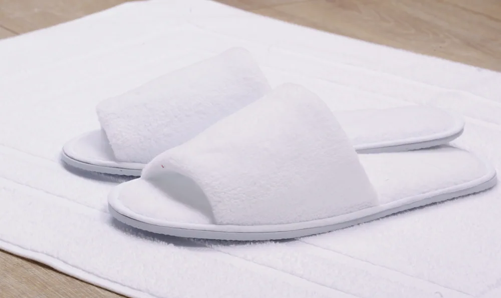
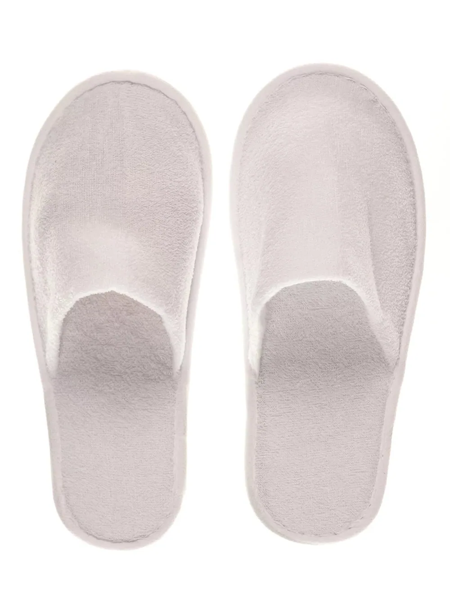
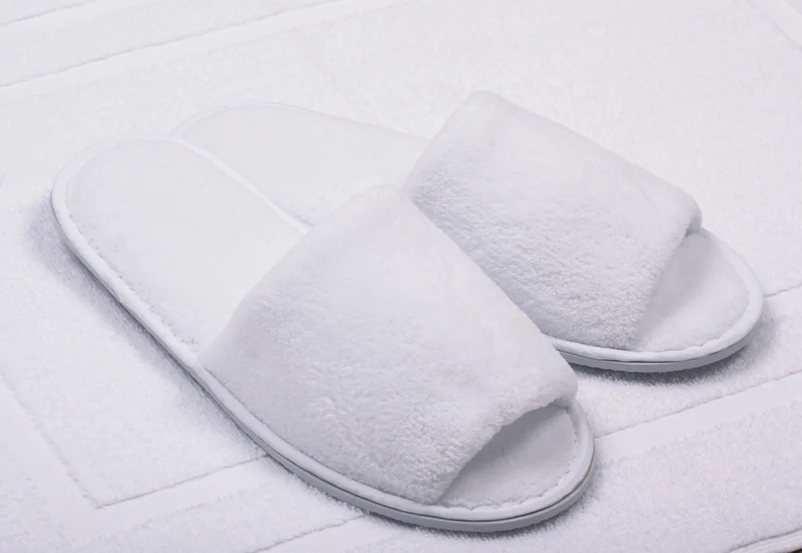

СтандартГотельні капці · Стандарт
Капці готельні махрові відкриті
Лаконічна відкрита модель для номерів і щоденної комплектації.
Особливість
Проста конструкція закриває базову потребу в гостьових капцях.
Капці — невелика деталь із великою сервісною вагою. Важливі приємна поверхня, акуратний кант, стійка підошва та відповідність формату номера або SPA.
Порівняйте матеріали й особливості виробів, оберіть розмір і колір та додайте потрібне до замовлення.

СтандартЛаконічна відкрита модель для номерів і щоденної комплектації.
Проста конструкція закриває базову потребу в гостьових капцях.

КомфортЗакритий носок додає відчуття захищеності та затишку.
Більш закритий формат доречний у прохолодних номерах або довшому перебуванні.

ПреміумМ’яка велюрова поверхня для виразнішої подачі в номері.
Велюрова фактура підтримує естетику premium-комплекту й помітна ще до використання.
Для номера та SPA можуть знадобитися різні моделі через вологість, маршрут гостя й час використання.
Товщина та рельєф впливають на відчуття опори; конкретний варіант узгоджують під покриття підлоги.
Індивідуальне пакування та стримане брендування підтримують відчуття чистоти й завершеності сервісу.
Залиште контакти — уточнимо сценарій використання, кількість і бажаний рівень, після чого підготуємо пропозицію.